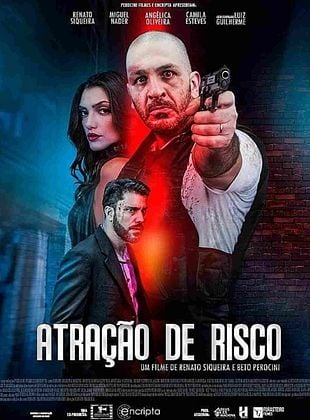
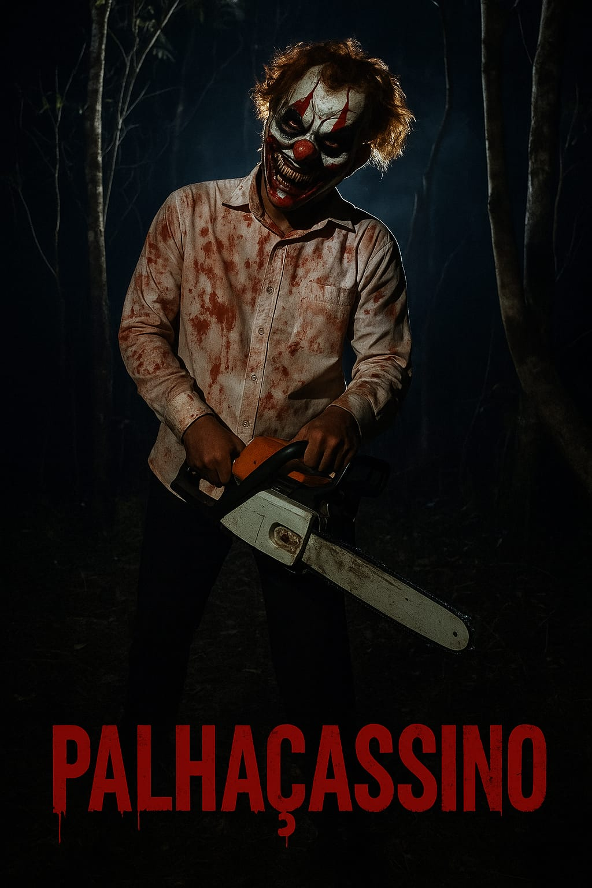

PRODUÇÕES HUMANITTI FILMES
Dentre as obras produzidas pela Produtora de Cinema, Humanitti Filmes, estão os seguintes títulos:



Atração de Risco
Carlos tenta se livrar de uma mulher obsessiva com quem se envolveu, mas ele se vê preso num jogo psicológico cada vez mais perigoso que coloca em risco sua vida.
Guardião do Espelho
Um perito criminal em crise de fé muda-se com a família para antiga fazenda do bisavô após despejo. No local, sua filha é possuída por demônios, iniciando uma batalha espiritual pela salvação dela.
Palhaçassino
Lia conhece Ricardo em um site de relacionamento, e é atraída junto com seus amigos para um acampamento em meio a uma floresta. Durante uma luarada à beira de uma fogueira é surpreendida por um grupo de palhaços psicóticos, assassinos e canibais. Com isso se inicia uma grande luta mortal pela sobrevivência.